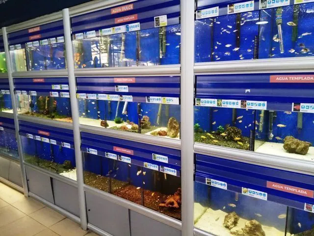

Marine
Life
¿Quienes somos?
Bienvenido al blog de Marine Life, donde encontrarás información y consejos para mantener y disfrutar de tus acuarios marinos o de agua dulce. Aquí encontrarás artículos sobre: Botánicos en el acuario: Descubre cómo utilizar diferentes tipos de botánicos como hojas, vainas o cáscaras para crear un entorno natural y atractivo en tu acuario Agua de ósmosis: Aprende sobre la importancia de usar agua de ósmosis en tu acuario y cómo mejorará la calidad de vida de tus peces Filtración: Conócemos los procesos importantes para mantener tus acuarios y peceras en buenas condiciones, como la filtración Proceso de ciclado: El proceso de ciclado en acuarios es un paso fundamental para establecer un ecosistema equilibrado antes de introducir peces. Este proceso implica el desarrollo de bacterias beneficiosas que descomponen el amoníaco en compuestos menos tóxicos a lo largo del tiempo Dentro de nuestro blog, encontrarás explicaciones científicas de forma amena y entretenida, que podrás utilizar en tu día a día. Estamos encantados de compartir nuestro conocimiento y experiencia con tú. ¡Disfruta del blog de Marine Life!

Agua Dulce
Los peces viven en el agua. Pero dependiendo de sus características prefieren agua dulce o agua salada. La primera clasificación que podemos hacer entre los peces domésticos es, por tanto, peces de agua dulce de acuario y peces de agua salada. Y dependiendo de los peces que te gusten más tendrás que preparar tu acuario para recibirlos. Necesitan equipamiento adecuado dependiendo de los habitantes que vayan a vivir en él. Los peces de agua dulce son aquellos que viven en superficies de agua no salada. Pueden ser ríos o lagos, pero nunca los encontraremos en el mar. Aunque también respiran a través de branquias, los de agua dulce no están preparadas para respirar agua salada. Si ponemos un pez de agua dulce en agua salada se ahogará.
Marinos
Los animales marinos son aquellos que están adaptados a la vida dentro del mar, en su superficie o en sus orillas. Dado que nuestro planeta está en dos tercios de su superficie cubierto por agua, la vida marina abarca una enorme y diversa cantidad de animales, repartida en los cinco océanos y adaptada a sus hábitats específicos.
Entre los animales marinos se hallan los descendientes de los organismos más antiguos conocidos. De hecho, hasta donde sabemos, la vida tuvo sus inicios en los océanos primitivos de la era geológica Precámbrica, hace miles de millones de años.
El mar es hogar, además, de millones de especies de microorganismos y de especies vegetales, que cumplen un rol importantísimo en la oxigenación del planeta. Además, sostienen el resto de la cadena trófica marina.